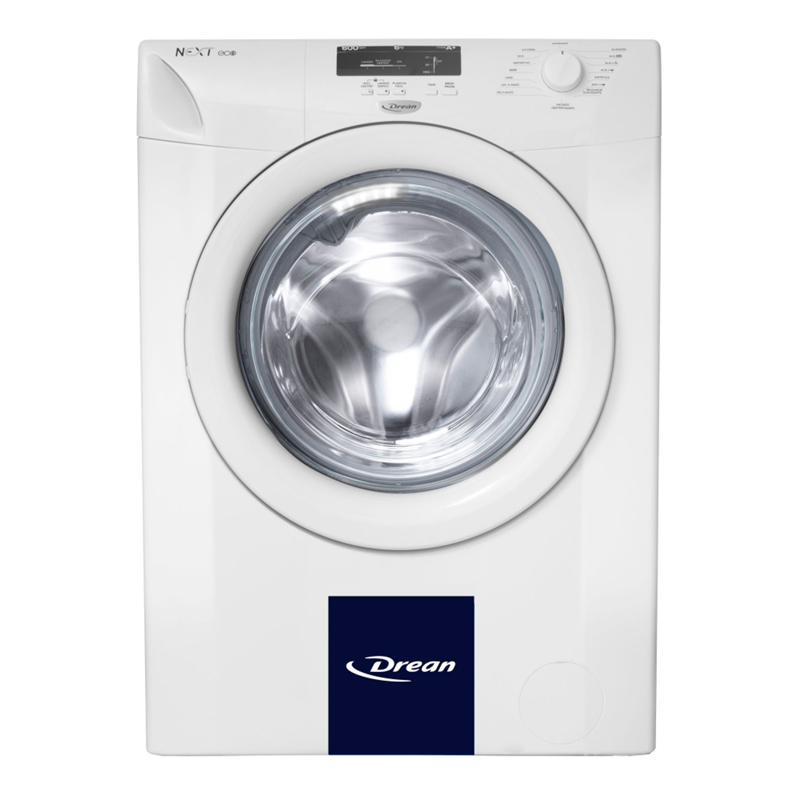
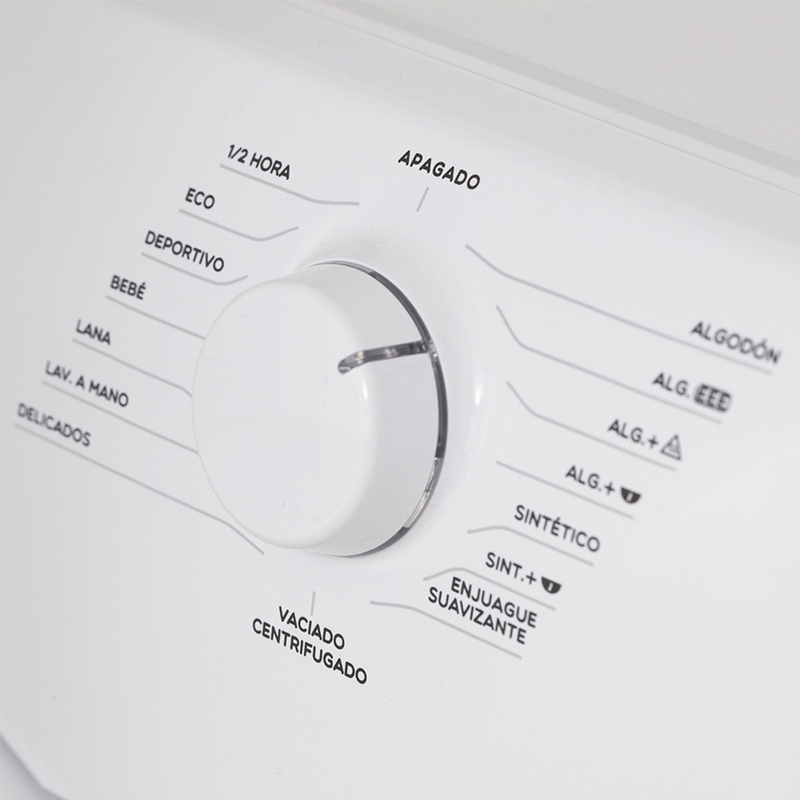

LAVARROPAS AUTOMATICO DREAN!
 Características generales Tipo de carga Frontal // Capacidad de lavado De 5 a 7 Kg // Velocidad de centrifugado 900 RPM // Carga máxima 6 Kg // Color Blanco // Material del tambor Acero Inoxidable // Garantía 12 Meses!